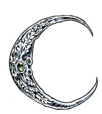
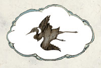
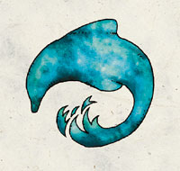
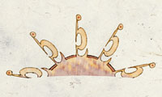
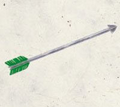
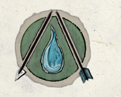
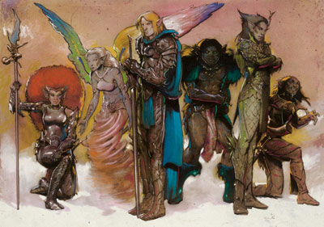
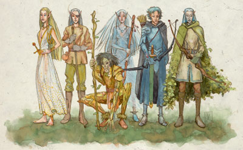

精灵神系
前言：与费伦的松散人类神系不同，从异世界来的精灵等其它类人种族所信奉的神系， 较类似于希腊或北欧的紧密神o系统，有一位强大神力的主神领导众神，神系中的众神或多或少彼此都会有所关连。而此神系的信徒，可以选择信仰整个神系，从而可以自神系中所有神的神域中挑选领域。紧密神系中的众神可以共享同一座神庙，一起受信众的崇敬。（就像是台湾的寺庙一样）
精灵神系也被称为席尔德琳神系 Seldarine，在精灵文中意为「树林中所有兄弟姊妹的追随者」，此神系的领导者是科瑞隆B拉瑞辛。许多精灵神系的神o都与其它和森林有密切关系的神（比如梅莉凯）关系十分密切。
【强大神力 Greater Power】
安格芮丝 Angharrath（精灵的生命女神）
别称：三位一体的女神The Triune Goddess，阿泛德国度之后Queen of Arvandor
圣徽：
居住界域：阿泛德国度（精灵国度）Arvandor
阵营：混乱善良CG
神职：春天Spring，丰饶fertility，种植planting，出生birth，防御defense，智慧wisdom
信徒：社群长老，德鲁伊，精灵，农夫，战士，助产士，母亲
牧师阵营：中立善良NG，混乱善良CG，混乱中立CN
神域：混乱Chaos，善良Good，精灵Elf，知识Knowledge，植物Plant，保护Protection，复苏Renewal
喜好武器：薄暮之矛Duskshaft（长矛longspear或短矛shortspear）
地位：科瑞隆的现任皇后

科瑞隆B拉瑞辛 Corellon Larethian（众精灵的守护神）
别称：精灵创造者Creator of the Elves，阿泛德国度之冠Coronal of Arvandor，席尔德琳的第一位神First of the Seldarine
圣徽：华丽的新月纹章
居住界域：阿泛德国度（精灵国度）Arvandor
阵营：混乱善良CG
神职：魔法Magic，音乐music，艺术arts，工艺crafts，战争war，精灵族elves（尤其是日精灵sun elves），诗歌poets，吟游诗人bards，战士warriors
信徒：魔法射手，艺术家，工匠，吟游诗人，战士，善良的统治者，游侠，诗人，术士，战士，法师
牧师阵营：中立善良NG，混乱善良CG，混乱中立CN
神域：混乱Chaos，善良Good，精灵Elf，魔法Magic，保护Protection，战争War
喜好武器：萨罕卓恩Sahandrian（长剑longsword）
地位：安格芮丝之夫，萝丝的前夫，维瑞文与伊丽丝崔之父，精灵神系的创建者
【中等神力InterMediate Power】

艾德莉B芬里雅 Aerdrie Faenya（翼精灵守护女神）
别称：有翼的母亲The Winged Mother，翼精灵之后Queen of the Avariel
圣徽：白云中的鸟类黑影
居住界域：阿泛德国度（精灵国度）Arvandor
阵营：混乱善良CG
神职：风Air，天气weather，鸟类avians，雨rain，丰饶fertility，翼精灵avariels
信徒：吟游诗人，德鲁伊，精灵，游侠，术士，旅行者，有翼生物
牧师阵营：中立善良NG，混乱善良CG，混乱中立CN
神域：风Air，动物Animal，混乱Chaos，善良Good，精灵Elf，风暴Storm
喜好武器：闪电束Thunderbolt（长木杖quarterstaff）
地位：安格芮丝女神的三化身之一

深海B赛悉拉Deep Sashelas（海精灵之守护神）
别称：海底之王Lord of the Undersea，海豚王子the Dolphin Prince
圣徽：海蓝色海豚
居住界域：阿泛德国度（精灵国度）Arvandor
阵营：混乱善良CG
神职：海洋ocean，海精灵sea elves，创造creation，知识knowledge
信徒：德鲁伊，精灵，海洋住民，游侠，贤者，水手
牧师阵营：中立善良NG，混乱善良CG，混乱中立CN
神域：混乱，善良，精灵，知识，海洋，水
喜好武器：深海三叉戟（三叉戟）
艾瑞芬B伊拉希尔 Erevan Ilesere（精灵的灵巧与盗贼之神）
别称：变色龙The Chameleon，绿色的丑怪小孩the Green Changeling，顽皮的小丑the Fey Jester
圣徽：拖着长尾巴的流星
居住界域：阿泛德国度（精灵国度）Arvandor
阵营：混乱中立CN
神职：恶作剧mischief，变迁change，盗贼rouge
信徒：吟游诗人，精灵，狂欢者，盗贼，术士，骗子
牧师阵营：混乱善良CG，混乱中CN立，混乱邪恶CE
神域：混乱Chaos，精灵Elf，幸运Luck，诡术Trickery
喜好武器：迅击Quickstrike（短剑shortsword）
海那莉B瑟拉妮尔Hanali Celanli（精灵的爱情女神）
别称：金色之心The Heart of Gold，可爱的玫瑰Winsome Rose，金心女士Lady Goleheart
圣徽：金色的心型
居住界域：阿泛德国度（精灵国度）Arvandor
阵营：混乱善良CG
神职：爱情Love，浪漫Romance，美丽beauty，魅力enchantment，魔法艺术品magic item artistry，精致艺术fine art，艺术家artists
信徒：审美家，艺术家，高魅力的施法者，恋人，术士
牧师阵营：中立善良NG，混乱善良CG，混乱中立CN
神域：混乱Chaos，媚惑Charm，善良Good，精灵Elf，魔法Magic，保护Protection
喜好武器：闪耀之心A shining heart（匕首dagger）
地位：安格芮丝女神的三化身之一

勒比拉斯B因诺瑞Labelas Enoreth（精灵的命运与历史之神）
别称：生命给予者The Lifegiver，连锁之王Lore of Continuum，落日贤者the Sage of Sunset
圣徽：落日之景
居住界域：阿泛德国度（精灵国度）Arvandor
阵营：混乱善良CG
神职：时间time，寿命longevity，重大选择之刻the moment of choice，历史history
信徒：吟游诗人，神力信徒，精灵，博学者，教师
牧师阵营：中立善良NG，混乱善良CG，混乱中立CN
神域：混乱Chaos，善良Good，精灵Elf，知识Knowledge，时间Time
喜好武器：时间之谱The Timestave（长木杖quarterstaff）
【中等神力 Intermediate Power】
瑞里芬B莱勒菲 Rillifane Rallathil（精灵的森林之神）
别称：树叶之王 The Oaklord，伟大的橡树 The Great Oak
圣徽：青绿橡树
居住界域：阿泛德国度（精灵国度）Arvandor
阵营：混乱善良CG
神职：林地woodland，自然nature，野精灵wild elves，德鲁伊druids
信徒：德鲁伊，游侠，野精灵
牧师阵营：中立善良NG，混乱善良CG，混乱中立CN
神域：混乱Chaos，善良Good，精灵Elf，植物Plant，保护Protection
喜好武器：橡树之杖The Oakstaff（长木杖quarterstaff）
莎罕妮B月弓 Sehanine Moonbow（精灵的预言与幻象女神）
别称：夜空之女 Daughter of the Night，梦幻的彩霞女士 the Luminous Cloud Lady of Dream
圣徽：满月，背景为半月形的薄雾
居住界域：阿泛德国度（精灵国度）Arvandor
阵营：混乱善良CG
神职：神秘主义mysticism，梦dreams，死亡death，旅程journeys，卓越transcendence，月moon，星辰stars，天空the heavens，月精灵moon elves
信徒：预言师，精灵，半精灵，幻术师，痛恨不死生物之人
牧师阵营：中立善良NG，混乱善良CG，混乱中立CN
神域：混乱Chaos，善良Good，精灵Elf，幻象Illusion，知识Knowledge，月亮Moon，旅行Travel
喜好武器：月之谱Moonshaft（长木杖quarterstaff）
地位：科瑞隆独自生出的女儿（一如宙斯独自生出阿西娜），安格芮丝女神的三化身之一

索罗诺尔B杉岚德瑞 Solonor Thelandira（精灵的弓箭之神）
别称：锐利之眼Keen-Eye，伟大的射手the Great Archer
圣徽：有着绿色尾羽的银箭
居住界域：阿泛德国度（精灵国度）Arvandor
阵营：混乱善良CG
神职：箭术Archery，狩猎hunting，野外求生wilderness survival
信徒：魔法射手，弓箭手，德鲁伊，精灵，游侠
牧师阵营：中立善良NG，混乱善良CG，混乱中立CN
神域：混乱Chaos，善良Good，精灵Elf，植物Plant，战争War
喜好武器：远击Longshot（长弓longbow）
地位：费马罗B莫斯德林之兄长
【弱等神力 Lesser Power】
费马罗B莫斯德林 Fenmarel Mestarine（精灵的流浪之神）
别称：孤狼The Lone Wolf
圣徽：黑暗中的精灵双眼
居住界域：阿泛德国度（精灵国度）Arvandor
阵营：混乱中立CN
神职：凶暴的精灵feral elves，流浪outcasts，替罪羔羊scapegoats，疏离isolation
信徒：德鲁伊，精灵，流浪者，游侠，盗贼，间谍，野精灵
牧师阵营：混乱善良CG，混乱中立CN，混乱邪恶CE
神域：动物Animal，混乱Chaos，精灵Elf，植物Plant，旅行Travel
喜好武器：王螫Thronbite（匕首dagger）
地位：萝丝的前恋人，索罗诺尔B杉岚德瑞之弟
【微弱神力 Demigod】

薛佛拉斯 Shevarash（精灵的憎恨之神）
别称：黑色的射手The Black Archer，夜之猎者the Night Hunter
圣徽：
居住界域：阿泛德国度（精灵国度）Arvandor
阵营：混乱中立CN
神职：对黑暗精灵的憎恨Hatred of the Drow，复仇vengeabce，对黑暗精灵的圣战crusades，失落loss
信徒：魔法射手，弓箭手，精灵，战士，猎人，游侠，士兵，术士
牧师阵营：混乱善良CG，混乱中立CN，混乱邪恶CE
神域：混乱Chaos，精灵Elf，报应Retribution，战争War
喜好武器：黑弓The Black Bow（长弓longbow）

由左至右为
生命女神 安格芮丝 [强大神力]
翼精灵女神 艾德莉 [中等神力]
精灵众神之长 科瑞隆 [强大神力]
流浪之神 费马罗 [弱等神力]
海精灵之神 深海 [中等神力]
灵巧之神 艾瑞芬 [中等神力]
精灵众神群像 2

由左至右为
爱情女神 海那莉 [中等神力]
命运之神 勒比拉斯 [中等神力]
林叶之神 瑞里芬 [中等神力]
幻象女神 莎罕妮 [中等神力]
憎恨之神 薛佛拉斯 [微弱神力]
弓箭之神 索罗诺尔 [中等神力]